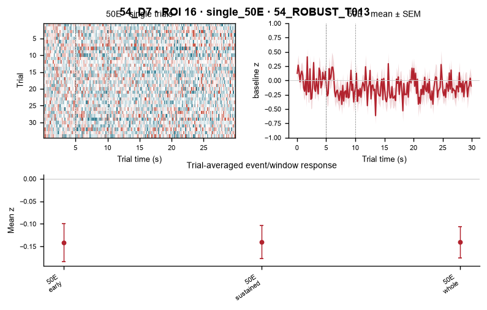
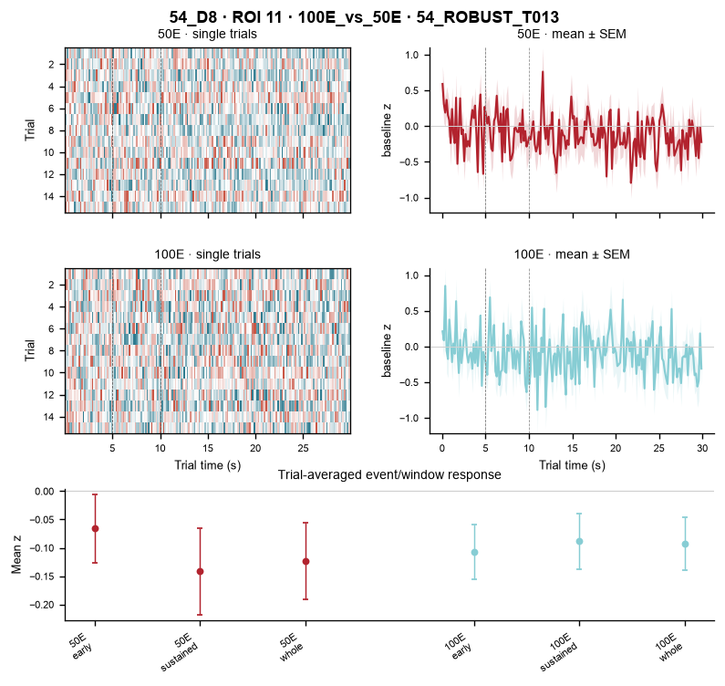

54_ROBUSTPLUS_T012
Identity layer: ROBUST_PLUS_IMAGEFIRST. This page checks this cell/track against the same fixed D1→D9 axis. A blank day means no validated cross-day correspondence, not biological disappearance.
D1
No validated correspondence on this day
D2
No validated correspondence on this day
D3
No validated correspondence on this day
D5
No validated correspondence on this day
D6
No validated correspondence on this day
D7ROI 16

D8ROI 11

D9ROI 12